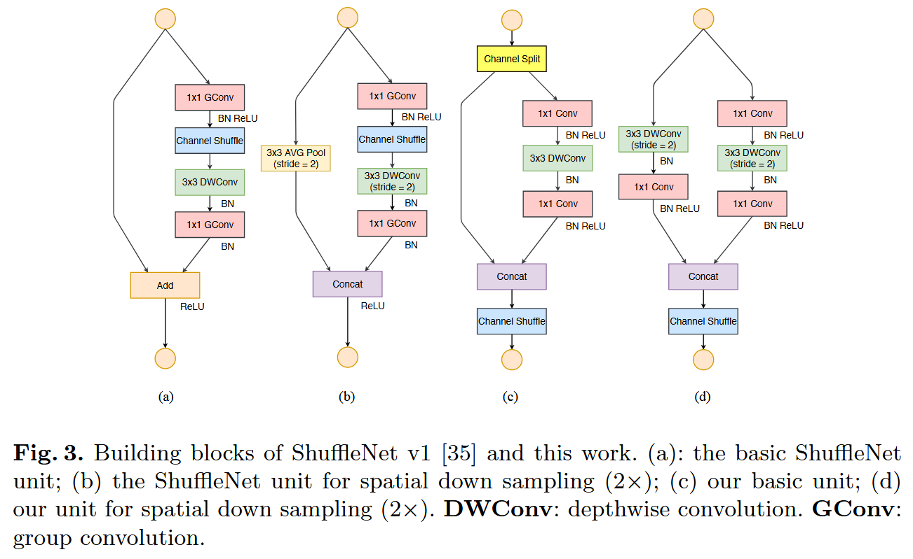

论文笔记 - ShuffleNet V2: Practical Guidelines for Efficient CNN Architecture Design
1. Information
Title: ShuffleNet V2: Practical Guidelines for
Efficient CNN Architecture Design
Link: ShuffleNet
V2 Paper
Source: European Conference on Computer Vision
(ECCV)
Date: 2018
2. Summary
本文提出了 ShuffleNet V2，一种新的轻量级卷积神经网络架构，旨在提高计算效率，特别适用于计算能力受限的移动设备。研究指出，直接度量（如速度）不仅取决于FLOPs（乘加数），还受到存储访问量和硬件平台特性等因素的影响。因此，本文基于直接度量评估目标平台上的性能，并提出了几个实用指南来指导高效的网络设计。
3. Background
卷积神经网络（CNN）在计算机视觉任务中取得了显著的成功，但其庞大的模型体积和高计算需求，使其在移动设备和嵌入式系统等资源受限的设备上应用时面临挑战。之前的轻量级 CNN 模型，如 MobileNet 和 ShuffleNet，尝试通过减少参数和计算量来解决这一问题。然而，这些模型在速度和资源使用上的效率仍然存在不足，尤其是在移动和嵌入式设备应用场景中。
4. Research Objective
本研究的目标是提供一套设计高效 CNN 架构的实用指南，尤其是在移动设备和嵌入式系统应用中。作者旨在通过分析模型的准确度、计算复杂度和资源约束之间的关系，提出 ShuffleNet V2 作为一种更高效的轻量级替代方案。
5. Method
在设计轻量化网络时不应简单的只考虑间接指标（FLOPs），需要满足以下的设计原则：
- 相同通道宽度能够最小化内存访问成本（MAC）：当卷积层的输入和输出通道数相同时，所需的内存访问成本（MAC）最小。这是因为在这种情况下，卷积操作可以更高效地利用缓存，减少内存访问次数。
- 过度的组卷积会增加 MAC：使用大的分组数进行卷积运算会增加内存访问成本，因为不同组之间的数据无法共享，导致更多的内存访问。
- 网络碎片化会降低并行程度：网络中过多的分支和基本单元会导致计算资源无法充分利用，降低并行计算的效率。
- Element-wise 操作的影响不可忽略：Element-wise 操作（如 ReLU 激活函数）虽然计算量不大，但在网络中广泛存在，对整体性能有不可忽视的影响。
根据上述设计原则，ShuffleNet V2 对 ShuffleNet V1 进行了若干优化，提升了模型的计算效率和内存访问效率。以下是对 V2 网络架构的改进：

在 ShuffleNet V1 中，网络结构基于通道混洗和深度可分卷积（depthwise separable convolution）两大核心技术进行设计。然而，ShuffleNet V1 中的某些设计存在计算效率上的瓶颈，特别是在内存访问和网络碎片化方面。
ShuffleNet V2 的改进
- 通道划分与跳跃链接 在 ShuffleNet V2 中，首先对特征图进行通道划分，一部分通道通过跳跃链接直接传递到下一层，另一部分通道经过卷积处理。在卷积操作中，V2 去除了 1x1 的分组卷积操作，因为在通道划分阶段，已经对通道进行了分组，从而不再需要额外的分组卷积。这一优化不仅降低了计算量，还减小了内存访问成本。
- 替换 Add 操作为 Concat 操作 ShuffleNet V2 中将原有的 Add 操作替换成了 Concat 操作。在V1中，Add操作通常会导致不同分支的特征图相加，可能带来一些计算上的冗余。而通过 Concat 操作，将特征图在通道维度上拼接，不仅能够保留更多的信息，还能更好地进行后续的通道混洗操作。
- 通道混洗的优化 在 V2 中，进行了优化的通道混洗操作进一步提升了特征图之间的信息交换效率。通道混洗确保了不同通道之间的信息能够流畅传递，而不至于造成信息瓶颈。通过减少计算冗余和提升信息流动效率，通道混洗有效提升了模型的表达能力，同时保持了较低的计算成本。
- 下采样操作优化 对于需要进行下采样的部分，ShuffleNet V2 去除了原始 ShuffleNet V1 中的通道分离步骤，而是通过加倍输出通道数来进行下采样。这一变化使得网络结构更加简洁，同时减少了冗余的操作步骤。通过优化下采样策略，V2 能够在不牺牲计算效率的情况下，更加平滑地进行空间尺寸的压缩。
6. Conclusion
ShuffleNet V2提出了一种实用且高效的CNN架构，通过优化原ShuffleNet的操作，针对移动设备和嵌入式系统的应用需求，提供了一种更轻量、高效的方案。本文提出的设计原则为未来轻量级CNN的研究提供了重要参考，能够在减少计算量的同时保持较高的准确度。与现有的轻量级模型如MobileNetV2相比，ShuffleNet V2在多个方面表现出色，具有较大的应用潜力。